Start with the room’s job
Plan the walk, the seat, the light and the place to put a drink before choosing decoration. Write down the daily routine and the storage it needs.
The living playbook · Option 1 / MW-G07
Mineral & Walnut, refined around your life.
Warm ivory and mushroom, rich walnut, natural oak and neutral textiles define Mineral & Walnut. Selected warm stone enriches the kitchen and bathrooms. Bedrooms retain their original individual designs; exposed wood stairs connect the floors.
MW-NR01: 24 spaces, 45 day views and 24 night views. Neutral bedrooms restored and exposed wood stairs coordinated across day/night; A/C1/E stone updates retained.

01 / The design compass
A warm modern base with thoughtful contrasts. Your personal choices lead; formulas help us test them.
Plan the walk, the seat, the light and the place to put a drink before choosing decoration. Write down the daily routine and the storage it needs.
Choose a lead element, then supporting elements. Your TV and fireplace can read as one composition. A room can have several functional zones without every wall becoming a feature.
Natural oak floors, warm mineral/ivory walls, rich walnut and restrained black accents carry across the house. Repeat these materials with different proportions and silhouettes in each room.
Balance soft upholstery, rounded tables and substantial walnut storage. Use legs, plinths or floating details according to the room and practical construction needs.
Test material boards near several windows and under the intended lamps. Use sheers for softness, a separate privacy or blackout layer where needed, and controllable task and accent light.
Empty wall and clear surfaces give art and architecture room to matter. Collectibles, family photos and seasonal decor belong in intentional groups, with storage for the rest.
Digital swatches describe a relationship, not purchasable paint or stain matches. Test physical samples together in the house.
02 / The current design
The revised Mineral & Walnut images incorporate the source-photo and blueprint audit, exposed oak stairs, room-specific window layers, selected warm stone surfaces and the original neutral bedroom palette. Compare the same room in daylight and with privacy or blackout closed after dark.
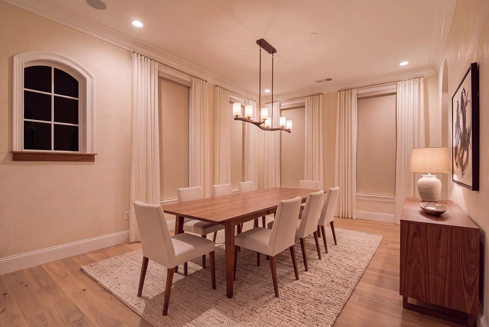
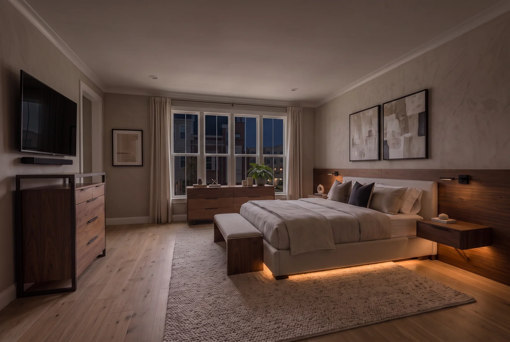
After dark / MW-N06
45 matching nighttime views show the proposed lighting from every camera. Open a floor and scroll through the rooms: each daytime angle appears beside its night view. Select any photo to browse all the photos on that floor.
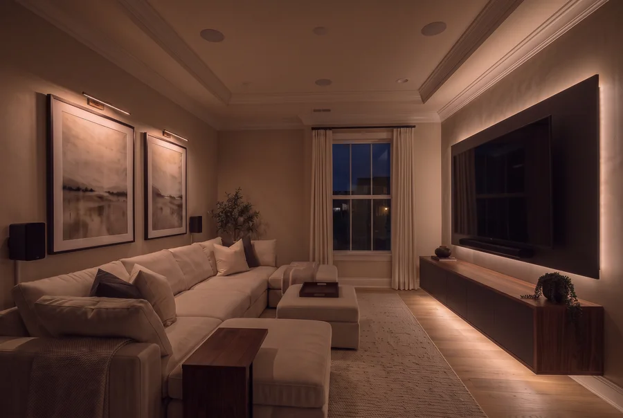
Floor 1 · Arrival & leisure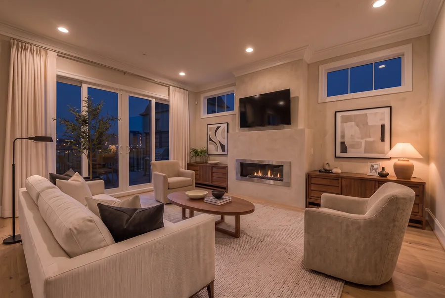
Floor 2 · Gather & entertain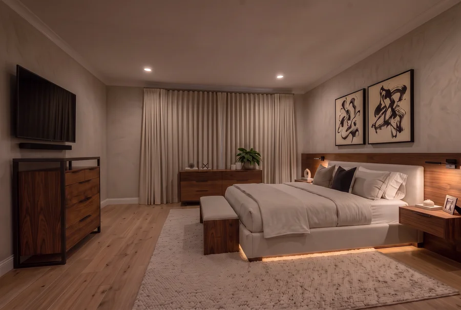
Floor 3 · Rest & recharge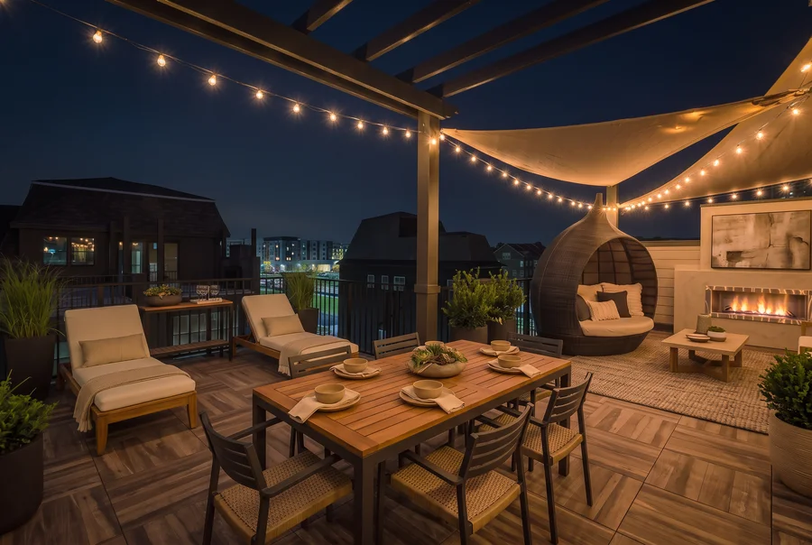
Floor 4 · Penthouse & terraceLook at the light on faces, work surfaces and circulation first, then the art, cabinetry and decorative glow. The build book records a proposed lamp-color target and separate control groups for every room. Brightness and fixture positions in these images are illustrative; final products, output, beam angles and dimming need physical testing in the house.
Bedrooms favor low reading light; kitchens and bathrooms retain useful task light. Updated night images show the visible privacy and blackout layers closed. Sheers alone do not provide reliable night privacy. Unphotographed rooms and derived camera angles remain labeled; Bedroom 5’s planned windows are illustrated, but the room is still unbuilt.
Compare day and night → · Room lighting and control notes →Whole-house design review / MW-NR01 · 2026-10-08
The original Mineral & Walnut direction remains. FB-017 identified first-floor window-count/size, doorway-offset and furniture/composition errors requiring another targeted correction pass. Entry wording, office printer location and media seating/TV wall are updated requirements; do not treat published prior views as verified construction elevations.
Reviewed 24 spaces, 45 day views, 24 night views and the four floor-plan previews. Prior whole-house, first-floor and second-floor audit history retained. Selected dining/living and upper-floor plan corrections visually reviewed; proposed for homeowner feedback. Measurements, products and omitted-space scope remain open..
No stair runner. The homeowner has selected exposed wood stairs across all floors.
Natural oak and warm white risers keep the stair visually quiet within the original Mineral & Walnut palette.
Natural oak treads and landings, warm white painted risers, and the existing dark handrails and white balusters.
This choice removes carpet supply and specialist fitting from the scope; retain the existing stair refinishing and lighting plans.
Current day/night views show exposed steps. Prior runner proposals are superseded.
Runner supply and fitting allowances removed; existing stair refinishing remains.
1 / Before ordering
Formal dining, sunroom, piano salon, media seating and Bedroom 2 are the highest fit risks. Full-size furniture footprints and opening clearances come before another styling pass.
2 / Before calling it whole-house complete
The main-level powder room, walk-in pantry, menu center, butler’s pantry and main-level terrace need explicit design decisions. Their existence and exact configuration must be checked against this house. Powder/pantry remodels are expressly excluded from the current base estimate beyond shared dry-area paint.
3 / Revised images ready for feedback
The revised set coordinates oak bedroom floors, media finishes and glazing, room-specific window layers and day/night furnishings. Source views and derived concepts are labeled; confirm unseen junctions and dimensions on site.
4 / High impact
Separate arrival, conversation, movie, reading, task and cleaning scenes. The salon needs a lower light layer, media art lights should dim/off for films, and suite LEDs should not dominate every evening scene. Choose actual dimmable products and test them; rendered orange/pink color casts do not identify a lamp or paint color.
5 / Refine
Keep the neutral palette and greenery. Replace some repeated beige abstract pairs with personally meaningful photography, a single larger artwork, textile art or a sculptural object. Retain the requested sibling artwork in the great room and bed art. Give dining and sunroom distinct pendant silhouettes.
6 / High impact
Plan where keys, bags, shoes, drinks, chargers, luggage, towels, toiletries, laundry, cleaning tools and seasonal decorations live. Much is mentioned in allowances but not located or dimensioned. Test actual seat and mattress comfort; hide cables and allow service access.
7 / Budget discipline
Use one natural-oak sample, one coordinated walnut stain family and a small controlled paint/trim palette. Use specialty mineral finish selectively, quality washable coatings elsewhere, and appropriate wet-area finishes. Refine installation and proportion before commissioning more wall panels or bespoke cabinetry.
Formal dining plan zone 155 × 183 in. Revised closed table target 84 × 40 in gives nominal centered end gaps of 49.5 in and side gaps of 57.5 in before chairs, trim or storage. A 108-in extended table reduces end gaps to 37.5 in. These are planning arithmetic, not verified usable clearance; test all chairs and supports before ordering.
Plan zone 147 × 111 in; proposed table 72 × 34 in. Centered nominal gaps are 37.5 in at ends and 38.5 in at sides before chair pullback, drape stacks and obstructions. Check the nearby oven and terrace-door operation with all seats in use.
The printed living-room zone is 16 ft × 11 ft 4 in. A roughly 5-ft piano and 96-in sofa are only concepts. Verify the selected piano case, open lid, bench travel and delivery route with actual seating footprints.
Develop a compact guest-facing room with a distinctive mirror/light pairing and one restrained finish choice. Verify existing services before scope/pricing.
Inventory food, serving pieces, small appliances and charging/mail needs; allocate useful closed storage and task light. Confirm which builder options are actually present.
Treat separately from the roof terrace. Resolve seating, planting, doors, privacy and maintenance from its actual photographs and dimensions.
Locate practical storage for shoes, linen, luggage, cleaning tools and seasonal decorations. These need a schedule even when they do not need a hero render.
Open a floor for the original findings, changes now illustrated, and remaining build decisions. Room links open the corrected images.
FB-017 correction required · replacement images and QA pending · E1 / E2
FB-017 correction required · replacement images and QA pending · O1 / O2
FB-017 correction required · replacement images and QA pending · M1 / M2 / M1-N3
Images revised · measure before ordering · G1 / G2
FB-017 correction required · replacement images and QA pending · B1 / B2
Images revised · measure before ordering · GR1 / GR2
Images revised · measure before ordering · K1 / K2 / K1-N3
Source/plan revision visually reviewed · proposed for homeowner feedback · D1 / D2
Source/plan revision visually reviewed · proposed for homeowner feedback · LR1 / LR2
Images revised · measure before ordering · S1 / S2
Images revised · measure before ordering · ST1 / ST2
Source/plan revision visually reviewed · proposed for homeowner feedback · OB1 / OB2 / OB1-N3
Source/plan revision visually reviewed · proposed for homeowner feedback · OR1 / OR2 / OR2-N3
Source/plan revision visually reviewed · proposed for homeowner feedback · BA1 / BA2
Images revised · measure before ordering · WC1
Source/plan revision visually reviewed · proposed for homeowner feedback · B21 / B22
Images revised · measure before ordering · B31 / B32
Source/plan revision visually reviewed · proposed for homeowner feedback · SB1 / SB2
Source/plan revision visually reviewed · proposed for homeowner feedback · LA1 / LA2
Source/plan revision visually reviewed · proposed for homeowner feedback · ST31
Source/plan revision visually reviewed · proposed for homeowner feedback · PL1 / PL2 / PL1-N3
Source/plan revision visually reviewed · proposed for homeowner feedback · B51 / B52
Images revised · measure before ordering · PBA1
Images revised · measure before ordering · RT1 / RT2 / RT1-N1
Visual comparison of every current day/night render, existing builder-plan previews, room schedules, window schedule, guide and budget exclusions. No site measurements, product tests or concealed conditions verified.
Project evidence
Current 45 day / 24 night views, room-design-book.json, interior-design-guide.json, mineral-walnut-window-treatments.json, mineral-walnut-budget.json and four floor-plan previews. Aesthetic rankings and recommendations are design judgment.
Roger Oates — Why wool? ↗
Manufacturer describes wool flatweave’s sound absorption and suitability for skilled fitting around curved stairs. No house-specific noise reduction or safety guarantee is claimed.
Dolby — 5.1.2 overhead layout ↗
Ground-level surrounds and overhead effects are distinct positions/functions. Choose the system and listening position before wiring; the rendered grille count is not a specification.
Portola — Roman Clay application and limitations ↗
Roman Clay is for smooth interior walls and is not specified by the manufacturer for wet areas such as inside showers. Select the full substrate/finish system for each location.
Drapery & privacy / MW-W01
Blackout where people sleep or watch movies; sheers with a separate privacy layer in social rooms; compact practical shades in working and wet areas. Sheers alone are reserved for glazing verified to have no privacy or blackout requirement.
Warm ivory linen-look sheers, ivory or oatmeal blackout curtain faces, and quiet warm-neutral shades. Concealed or slim dark tracks coordinate with walnut, natural oak and restrained black details. Blackout describes the backing, not a black visible curtain.
MW-A02 corrects visible openings against original photographs and the blueprint. Day shows open layers; night demonstrates privacy/blackout closed where visible. Bedroom 2 follows the clarified stair-hall/closet layout; Bedroom 5 reverse view interprets its planned front windows. Rendered operation is not a tested privacy or blackout result.
Keep the airy sheer appearance in living rooms, but include an independently operated, non-see-through privacy shade behind it. An open-weave solar screen is not a substitute for an evening privacy layer. Test the actual sample from outside with the room lights on; silhouettes can remain visible through some light-filtering fabrics.
For dual curtains, place sheers closest to the glass and fully closing blackout-lined panels on an independent room-side track. Resolve center overlap, wall returns and top/bottom light gaps. Where furniture prevents functional curtains, substitute a blackout roller behind the sheers. Fabric alone does not guarantee a completely dark room.
Only where an after-dark sightline check confirms no privacy need and the room has no sleep or cinema requirement. No occupied bedroom or street-facing social room is assigned sheers alone by default. Verified private high glazing can remain bare; a sheer-only treatment there is an aesthetic choice.
Base pricing assumes manual tracks and cordless shades, retail or semi-custom fabric, and surface-mounted hardware. No rebuilt ceiling pockets or motors. Measure track width, stack-back, opening operation, furniture and floor variation; choose fullness with the fabricator for the actual heading and fabric. Avoid puddled fabric.
The room amounts below are provisional allowances, not a window count or supplier quotation. Replace them with a labeled opening-by-opening survey before ordering. Interior glazed doors, transoms and terrace doors must be identified separately; windowless rooms receive no new curtain allowance.
$10,800–$19,000 fabrics, shades, tracks and hardware · $3,050–$5,425 direct installation.
Our planning allowances, not supplier quotes. GC markup applies to installation; owner-goods tax, logistics and project contingency are added by the cost plan. The same room rows appear in the budget—do not add this schedule again. Exact openings, widths and quantities require a site measure. Motors, rebuilt pockets, replacement glass, specialty arch systems and unconfirmed high-window treatments require separate quotes.
See room costs and project total →Practical privacy treatment
No gallery drapes; discreet privacy shade on exterior entrance glass if needed
Why: The two-story chandelier, arch and light doors should remain the focus. Full-height curtains add bulk; street-level entrance glass may still need evening privacy.
Where: Exterior front-door glazing only, subject to measured fit. Keep internal clear-glass office/media door pairs uncovered in the gallery. High gallery glazing is reviewed separately for neighboring sightlines.
Goods $200–$400
Installation $75–$150
Sheers + privacy shade
Ivory sheers + hidden light-filtering privacy shades
Why: Adjustable glare control helps screen work and calls; a separate privacy layer lets you work after dark without closing the room off all day. Blackout is unnecessary for normal office use.
Where: Both main exterior banks are centered paired 2×2 groups, with TWO structural units in each bank. Preserve the small circular portico-side window and clear internal gallery doors; assess round-window privacy separately on site.
Goods $700–$1,100
Installation $200–$350
Sheers + blackout
Ivory sheers + blackout-lined curtains; removable clear-door covers for movie mode
Why: Daylight and gallery light both reduce contrast on the 83-inch TV. Privacy alone is insufficient for the requested theater atmosphere.
Where: One REAL centered paired 2×2 street-facing window, plus a separate removable opaque cover for each clear interior door leaf. The sofa wall is SOLID: its smaller exterior window feature is fake, as confirmed by the homeowner, and has no inside opening.
Goods $850–$1,500
Installation $250–$450
Practical privacy treatment
Washable light-filtering privacy roller shades; no loose drapes
Why: Shades control mirror glare and street privacy without loose fabric in future equipment space. Workout use does not require blackout.
Where: Large two-sash exterior window and smaller portico-side window; no curtains on the internal doors.
Goods $300–$600
Installation $100–$200
No covering in base
No window treatment
Why: There is no exterior glazing to dress. Do not add a curtain allowance for a reflected or imagined opening.
Where: Bath #3 is windowless in the documented layout.
No new window-treatment cost in base.
Room build notes →Sheers + privacy shade
Ivory sheers + hidden privacy shades; no mandatory blackout
Why: This is a social room with a TV, so flexible glare control and evening privacy matter more than cinema-level darkness. The airy main-floor appearance stays intact.
Where: Terrace-facing glazing. Leave the two high horizontal transoms beside the fireplace bare unless glare or a neighboring sightline requires treatment.
Goods $850–$1,500
Installation $200–$350
Practical privacy treatment
Wipeable privacy roller at the counter window
Why: The kitchen needs daylight and evening privacy, with a finish that tolerates cooking and cleaning. Full-length drapes are impractical at a counter or splash area.
Where: Kitchen counter window only. Adjacent sunroom window banks are counted in the sunroom.
Goods $200–$400
Installation $75–$125
Sheers + privacy shade
Ivory sheers + discreet privacy shades at tall windows
Why: Dinner after dark requires privacy while daytime entertaining benefits from light. Heavy blackout is unnecessary and should not obscure the arched architecture when open.
Where: Four tall dining openings: two rectangular windows with shallow transoms on the east facade and two arched windows on the south facade. The smaller high-sill arch near the open living junction stays bare unless a sightline check requires coverage. Preserve the real butler-pantry passage; the oblique photo feature is not a proven closed niche.
Goods $900–$1,600
Installation $250–$450
Sheers + privacy shade
Clear ivory sheers + hidden privacy/glare shades
Why: Maintain the bright piano salon and soft Cloud-style seating, with privacy after dark. An adjustable layer also helps reduce direct sun at the piano; sheers alone are not a complete sun-protection strategy.
Where: TWO real tall living windows along EAST facade (printed-plan BOTTOM). NORTH facade decorative False Window stays solid inside. Keep the south dining seam and west hall connection open.
Goods $600–$1,100
Installation $150–$300
Sheers + privacy shade
Ivory sheers + independent privacy shades by window bank
Why: The six-seat breakfast area should feel bright. Separate shades let you manage individual sunny sides and evening privacy without making the whole room dark.
Where: Wraparound lower glazing and terrace-door glass as measured. High transoms stay open visually unless an actual sightline or glare issue requires coverage.
Goods $900–$1,500
Installation $300–$500
No covering in base
Bare high glazing by default; privacy review before ordering
Why: The landing and quarter-turn stair benefit from daylight; loose drapes would add clutter at circulation. No sleep or cinema use requires blackout.
Where: Existing high stacked stair windows.
No new window-treatment cost in base.
Room build notes →Sheers + blackout
Ivory sheers + fully closing oatmeal blackout-lined curtains
Why: Sleeping darkness and evening privacy require covering the full bedroom/retreat exterior inventory because the connection is open.
Where: All FOUR real west sash units. Coordinate every real retreat opening as part of the same open sleep-darkening zone; interior vestibule transom is not an exterior window.
Goods $900–$1,600
Installation $200–$350
Sheers + blackout
Match owners bedroom: ivory sheers + fully closing blackout layers
Why: Retreat exterior light enters the open owners bedroom, so every real opening belongs to one sleep-darkening zone.
Where: THREE real west sash units and TWO photographed south side units. Any north optional terrace-door glazing remains conditional on actual-house confirmation; no door is added to the open bedroom connection.
Goods $1,200–$2,000
Installation $300–$550
Practical privacy treatment
Moisture-resistant opaque privacy shade at the ONE real dry window
Why: Bathing privacy requires a fully closing shade at the real window. Reflected glazing receives no separate treatment; bedroom blackout can be managed with the bathroom door closed.
Where: ONE south dry exterior opening near tub/vanity only. Apparent left/shower-side window is reflection on/in enclosure glass, not a second exterior opening.
Goods $350–$650
Installation $150–$250
No covering in base
No window treatment
Why: No exterior opening needs a covering; preserve storage and task lighting.
Where: Windowless closet in the current plan-led concept.
No new window-treatment cost in base.
Room build notes →Sheers + blackout
Ivory sheers + blackout-lined curtains or concealed blackout roller
Why: A sleeping room needs darkness and nighttime privacy even when also used for study. The desk is not a reason to omit blackout.
Where: Plan-BOTTOM wider paired front bank and plan-RIGHT narrow side opening. Headboard remains TOP stair-hall wall; closet at LOWER plan-LEFT shared-bath boundary away from TOP-LEFT hall entry.
Goods $400–$750
Installation $125–$200
Sheers + blackout
Ivory sheers + blackout at every exterior opening
Why: All three openings must darken for comfortable sleeping; dressing only the large window would leave the bedside windows admitting light.
Where: Three exterior opening groups: paired front bank on plan-BOTTOM/east, plus TWO separate windows flanking headboard on plan-LEFT/south.
Goods $750–$1,200
Installation $200–$350
No covering in base
No covering in photographed vanity zone; wet-compartment opening pending confirmation
Why: Avoid ordering a treatment for a bedroom reflection or falsely certifying the full shared bath as windowless. Bathing privacy in the unvisualized wet compartment depends on its actual opening inventory.
Where: No exterior opening is visible in current vanity-zone views. Bedroom glazing through doors/mirrors belongs to those bedrooms. The small front/toilet-side opening in the separate wet compartment is UNCONFIRMED as interior glazing.
No new window-treatment cost in base.
Room build notes →Practical privacy treatment
Washable privacy rollers; lined woven-look shades as an alternative
Why: Laundry needs useful daylight, washable finishes and evening privacy. Open-weave decorative shades alone may be see-through; blackout and floor-length curtains are unnecessary.
Where: Two separately cased sink/counter-side openings: near arched-top window and farther rectangular window.
Goods $300–$550
Installation $100–$175
No covering in base
Bare high windows; add privacy only if sightlines require it
Why: Daylight supports circulation; the stair does not need blackout or floor-length fabric.
Where: THREE separate high 2×2 upper stair-hall windows.
No new window-treatment cost in base.
Room build notes →Sheers + privacy shade
Ivory sheers + independent privacy layers at terrace glazing
Why: The penthouse lounge should retain its views by day and privacy after dark. Being on the top floor does not guarantee privacy from adjacent homes. It is not currently a sleeping room or dedicated cinema.
Where: South French-door glazing, ONE small flank window each side, wide west terrace slider and compact southwest bar window.
Goods $950–$1,700
Installation $250–$450
Sheers + blackout
Ivory sheers + blackout at the two planned guest-bedroom windows
Why: The proposed room will be used for sleeping; integrate privacy and darkness with its enclosure and future storage without changing the window wall.
Where: TWO separated east openings in proposed new Bedroom5, opposite the west headboard. The room is unbuilt and final real opening inventory needs measured new-room drawings.
Goods $450–$850
Installation $125–$225
No covering in base
No window treatment in the current layout
Why: No exterior glazing needs dressing in the documented concept.
Where: No exterior opening shown in the plan-led Bath4; west vestibule entry, north vanity/toilet and east shower remain.
No new window-treatment cost in base.
Room build notes →No covering in base
No interior drapes outdoors
Why: Interior sheers and blackout panels do not belong in this outdoor exposure. Existing exterior shade structures and weather-rated furniture form a separate scope.
Where: Outdoor roof terrace; adjacent interior glazing is covered under loft or suite schedules. Optional outside spiral remains unconfirmed at actual house.
No new window-treatment cost in base.
Room build notes →Checked 2026-10-08. Room recommendations and prices are our design judgments and allowances.
Hunter Douglas · opacity and privacy ↗
Sheers offer little privacy; light-filtering fabrics vary in opacity. Manufacturer guidance informs performance distinctions, not the room design or prices.
Hunter Douglas · blackout and light gaps ↗
Mounting, overlaps, liners and side channels influence room darkening. No particular brand or product is specified.
Hunter Douglas · bathroom window treatments ↗
Consider humidity and window location when selecting material; direct shower exposure needs explicit product suitability.
Hunter Douglas · solar shade limitations ↗
A solar-screen shade does not reliably provide nighttime privacy when the interior is illuminated.
The stair finish / MW-NR01
All three interior stair connections, including intermediate landings, remain uncovered.
Natural oak treads and landings, warm white painted risers, and the existing dark handrails and white balusters.
Retain the corrected stair geometry. Complete and protect the selected wood finish during the remaining work; no carpet runner, underlay, binding or fitting is included.
View the stairs by day and night →03 / Material decisions
Prioritize comfort, a coherent material sample board and good installation. Reserve more demanding finishes for the places where they make a difference.
Propose Roman Clay on selected dry focal surfaces, with washable warm matte paint elsewhere. Keep the application smooth and subtle in this sunlit house.
Price surface preparation separately. Compare a real sample of each finish with the same floor, upholstery and trim; the render does not specify a paint color.
Portola · Roman Clay application and care ↗Use when a softer brushed, cloudy surface is wanted. It is not an automatic protective layer over decorative paint.
Follow the selected system’s primer and sealer instructions. A wipeable surface is not a waterproof splash assembly; use appropriate tile/stone and substrate systems at wet zones.
Portola · Lime Wash system ↗Budget replacement natural oak in connected dry spaces and all four bedrooms, with separate rugs. Keep a single coordinated undertone through circulation and adjacent rooms.
Wet bathrooms, laundry needs and the gym may need different appropriate materials. Check substrate, moisture, stair levels and thresholds. Wide planks alone do not make a floor better.
Use rich walnut for selected cabinetry, consoles and the owner-suite headwall. Natural oak flooring keeps the backdrop lighter; restrained black frames and hardware provide definition.
Approve a shared walnut sample. Grain, veneer sequencing, edge details and hardware quality matter more than repeating the same furniture shape everywhere.
Sleeping and cinema spaces: sheers plus blackout. Social rooms: sheers plus a discreet privacy shade. Working/wet areas: practical shades. See the complete 24-space schedule below.
Keep ivory/oatmeal textile faces and slim dark or concealed hardware. Sheers alone are used only where privacy and light-control needs are verified absent. Full closing coverage, returns and stack-back matter more than decorative side panels.
Design target: 2700K in relaxed spaces and coordinated 3000K task areas, or compatible warm-dim systems; judge connected sightlines as a whole.
Aim for 90+ CRI, but also check glare, output, dimmer compatibility and flicker. Mock up the actual fixture and control. Keep LED drivers accessible and dots out of view.
US Department of Energy · Light-bulb selection ↗A: pearl onyx appearance around the primary bathing areas. C1: cream quartzite appearance on kitchen worktops, backsplash and waterfall. E: pale limestone appearance behind the shared vanity and on the doorway return. Original mineral fireplace retained while its choice remains open.
These are porcelain appearance directions, not selected natural stone or product SKUs. Confirm physical samples, approved applications, format, layout, joints, edges and installation with the relevant fabricator. Obtain the actual cost difference before committing to the finishes.
Keep the permanent background calm. Christmas can bring evergreen, deep red, silver or warm lights; Halloween can use charcoal, amber and branches. Rotate a few textiles and objects, retain clear walkways, and reserve a storage location for each seasonal set. No permanent yellow/blue requirement.
Choose the largest piece that still fits circulation, doors, reach and daily use. Our dining table needs a plan test before any increase.
Use a clear visual hierarchy within each view or zone; a fireplace and TV can be one composition. Keep the existing TV location unless separately redesigned.
Avoid accidental mismatches within a scene. Deliberate warm-dim lamps or task layers can coexist when tested together.
There is no reliable fixed two-shade conversion. Test large physical samples across daylight and evening conditions.
A tint formula change is not a predictable lightness conversion. Select and sample the actual proposed color.
Choose an actual coating system for cleaning, moisture and substrate. Sheen alone does not establish durability or waterproofing.
Useful prompts, not quotas. Personal pieces and visual balance matter more than counting objects or percentages.
Custom solves a specific fit or storage problem. Use well-made retail furniture; quote stock boxes with tailored fronts where appropriate. No guaranteed saving percentage.
Spend where an upgrade changes comfort, function or a key view. Retention, refinishing and good installation can be the better choice.
Use the chosen screen, resolution, content, viewing preference and actual seat location. Test at full size; the playbook’s multiplier is not universal.
04 / The whole-house plan
Each room keeps the architecture and your previous feedback. These are the current refinements, with construction questions kept beside the design intent. Thumbnails show the current source-audited proposals.
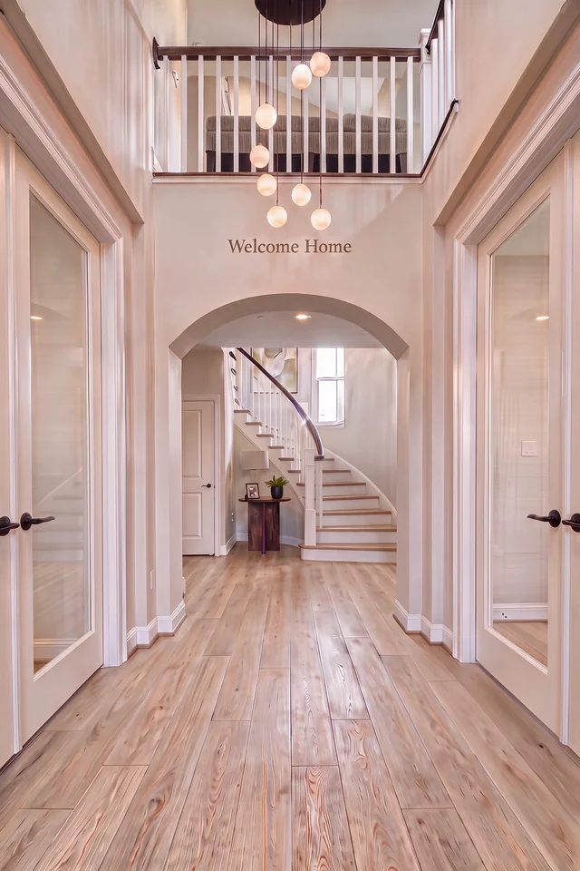
Floor 1 · Lighting + finish samples
Arrival with breathing room
FB-017 identifies further first-floor corrections. Published previous images remain available while replacement views undergo source-photo, blueprint and homeowner-evidence QA.
First-floor revision visually reviewed against source/plan and homeowner feedback; proposed for review.
Open room views → · Night lighting →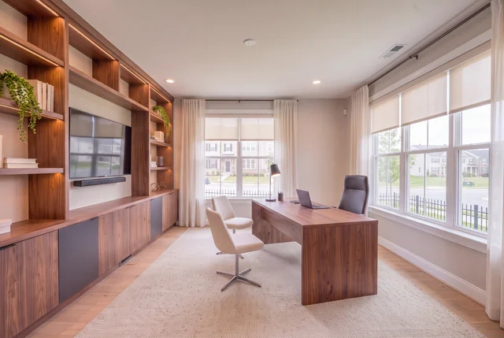
Floor 1 · Storage + task lighting
A working library
FB-017 identifies further first-floor corrections. Published previous images remain available while replacement views undergo source-photo, blueprint and homeowner-evidence QA.
First-floor revision visually reviewed against source/plan and homeowner feedback; proposed for review.
Open room views → · Night lighting →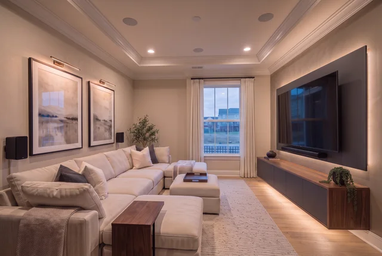
Floor 1 · AV coordination + acoustics
A calm private cinema
FB-017 identifies further first-floor corrections. Published previous images remain available while replacement views undergo source-photo, blueprint and homeowner-evidence QA.
First-floor revision visually reviewed against source/plan and homeowner feedback; proposed for review.
Open room views → · Night lighting →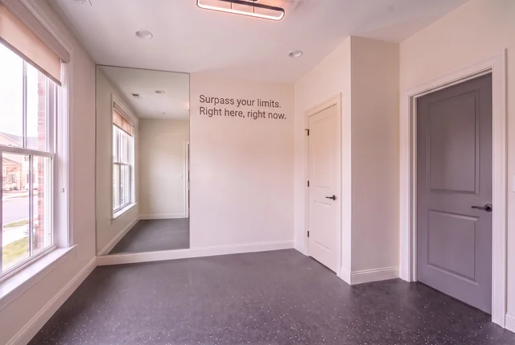
Floor 1 · Durable finishes
Clear, energizing space
Source-photo/plan audit findings have been addressed in the current review; measured fit and selections remain open.
MW-A02 · source-audited revision for feedback
Open room views → · Night lighting →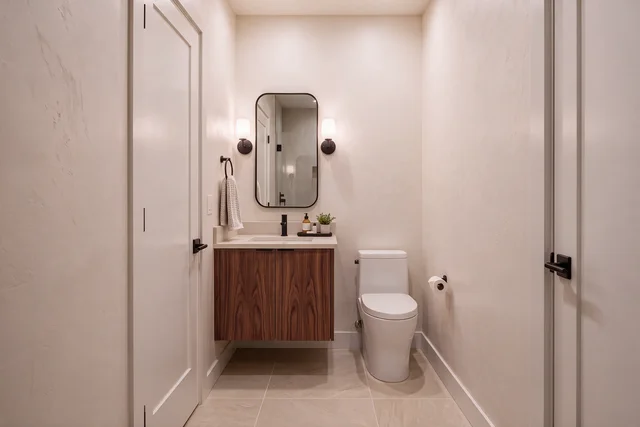
Floor 1 · Moisture + useful storage
Small but deliberate
FB-017 identifies further first-floor corrections. Published previous images remain available while replacement views undergo source-photo, blueprint and homeowner-evidence QA.
First-floor revision visually reviewed against source/plan and homeowner feedback; proposed for review.
Open room views → · Night lighting →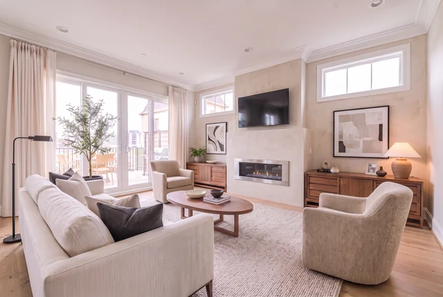
Floor 2 · Pilot render + furniture scale
Relaxed, collected luxury
Source-photo/plan audit findings have been addressed in the current review; measured fit and selections remain open.
MW-A02 · source-audited revision for feedback
Open room views → · Night lighting →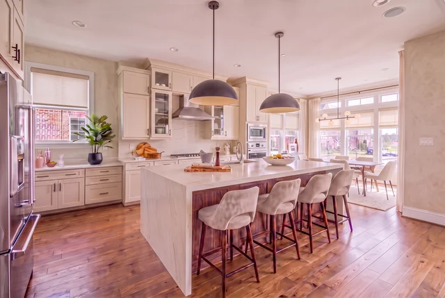
Floor 2 · Stone sample + installer takeoff
Quiet working backdrop
Source-photo/plan audit findings have been addressed in the current review; measured fit and selections remain open.
Second-floor revision visually reviewed against source/plan and homeowner feedback; proposed for review.
Open room views → · Night lighting →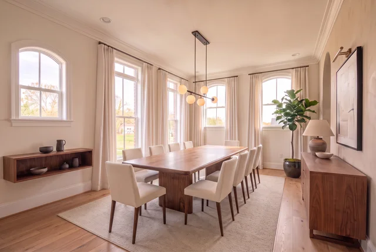
Floor 2 · Pilot render + clearance study
Eight daily dining places with two separate occasional chairs, directly open to the living/piano salon.
Current source-reviewed revision addresses the recorded image findings; measured fit, final products and construction details remain open.
Source/plan and same-camera lighting QA recorded; proposed for homeowner feedback.
Open room views → · Night lighting →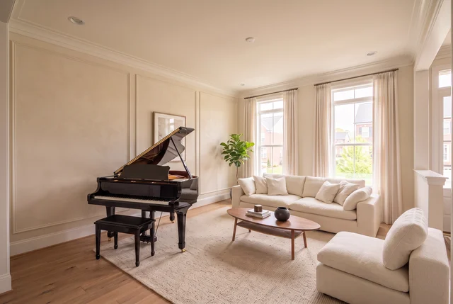
Floor 2 · Measured furniture plan
Neutral piano salon with two separate ivory sofas in an L and a diagonal northwest baby grand.
Current source-reviewed revision addresses the recorded image findings; measured fit, final products and construction details remain open.
Source/plan and same-camera lighting QA recorded; proposed for homeowner feedback.
Open room views → · Night lighting →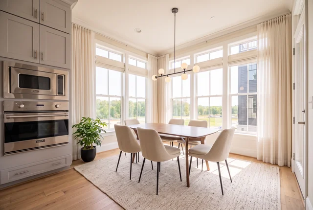
Floor 2 · Daylight + everyday use
Light, easy everyday dining
Source-photo/plan audit findings have been addressed in the current review; measured fit and selections remain open.
Second-floor revision visually reviewed against source/plan and homeowner feedback; proposed for review.
Open room views → · Night lighting →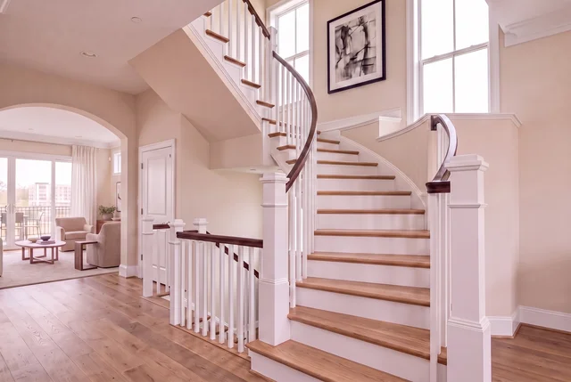
Floor 2 · Architecture + safe circulation
A coherent connection
Source-photo/plan audit findings have been addressed in the current review; measured fit and selections remain open.
Second-floor revision visually reviewed against source/plan and homeowner feedback; proposed for review.
Open room views → · Night lighting →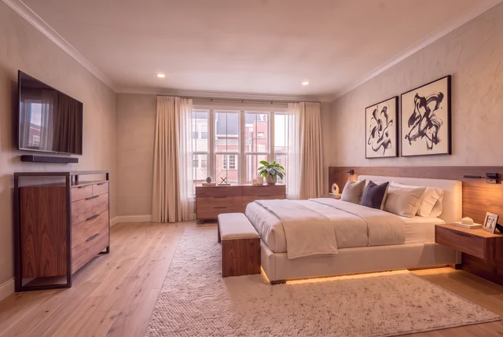
Floor 3 · Pilot render + sleep lighting
A restful private suite
Current source-reviewed revision addresses the recorded image findings; measured fit, final products and construction details remain open.
Source/plan and same-camera lighting QA recorded; proposed for homeowner feedback.
Open room views → · Night lighting →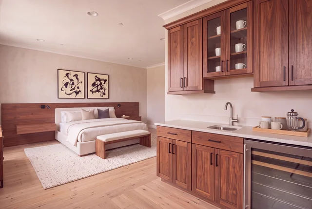
Floor 3 · Continuity + practical bar
A quiet morning ritual
Current source-reviewed revision addresses the recorded image findings; measured fit, final products and construction details remain open.
Source/plan and same-camera lighting QA recorded; proposed for homeowner feedback.
Open room views → · Night lighting →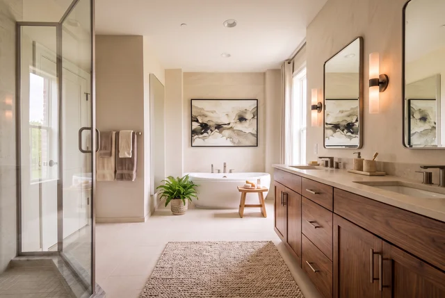
Floor 3 · Stone sample + installer takeoff
A warm, durable spa
Current source-reviewed revision addresses the recorded image findings; measured fit, final products and construction details remain open.
Source/plan and same-camera lighting QA recorded; proposed for homeowner feedback.
Open room views → · Night lighting →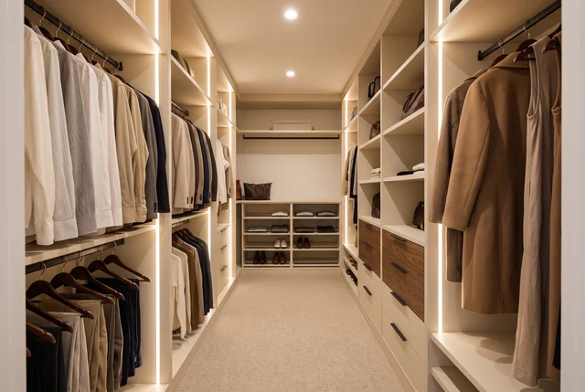
Floor 3 · Inventory + lighting
Order without excess millwork
Source-photo/plan audit findings have been addressed in the current review; measured fit and selections remain open.
Existing images retained after source/plan review; unseen scope qualified.
Open room views → · Night lighting →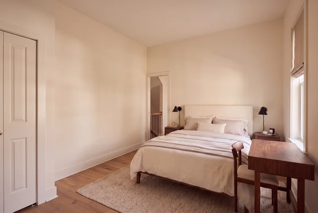
Floor 3 · Resolve layout first
A tailored guest/work room
Current source-reviewed revision addresses the recorded image findings; measured fit, final products and construction details remain open.
Source/plan and same-camera lighting QA recorded; proposed for homeowner feedback.
Open room views → · Night lighting →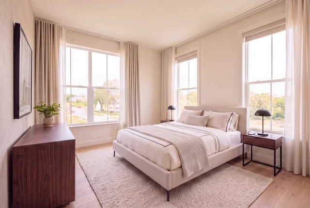
Floor 3 · Scale + drapery
A light, window-led bedroom
Source-photo/plan audit findings have been addressed in the current review; measured fit and selections remain open.
Existing images retained after source/plan review; unseen scope qualified.
Open room views → · Night lighting →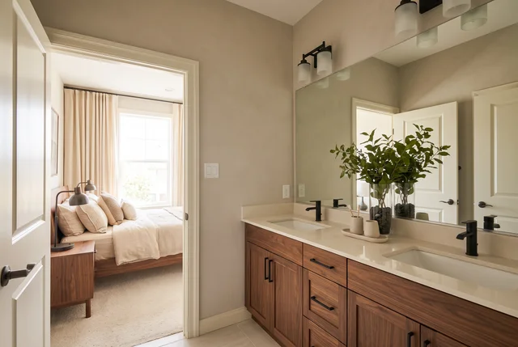
Floor 3 · Stone sample + installer takeoff
Simple, durable and easy to share
Current source-reviewed revision addresses the recorded image findings; measured fit, final products and construction details remain open.
Source/plan and same-camera lighting QA recorded; proposed for homeowner feedback.
Open room views → · Night lighting →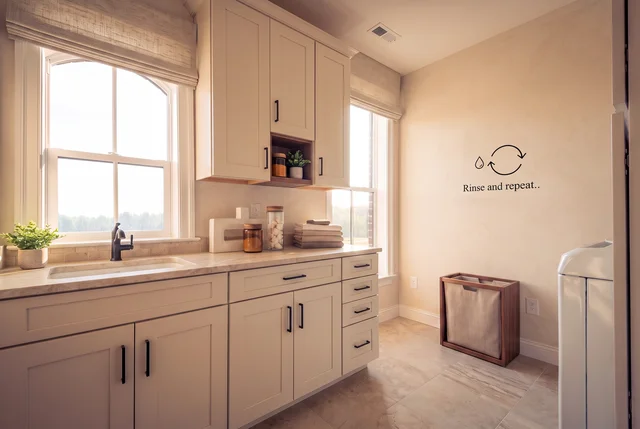
Floor 3 · Service access + workflow
A useful room with a little wit
Current source-reviewed revision addresses the recorded image findings; measured fit, final products and construction details remain open.
Source/plan and same-camera lighting QA recorded; proposed for homeowner feedback.
Open room views → · Night lighting →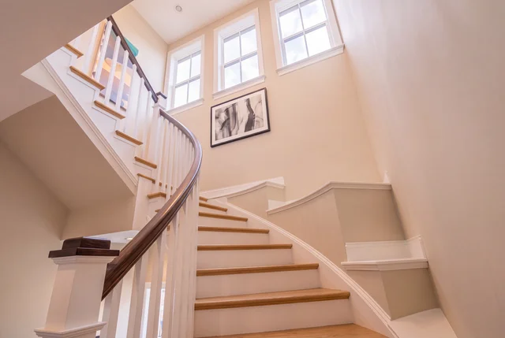
Floor 3 · Continuity
A calm upper landing
Current source-reviewed revision addresses the recorded image findings; measured fit, final products and construction details remain open.
Source/plan and same-camera lighting QA recorded; proposed for homeowner feedback.
Open room views → · Night lighting →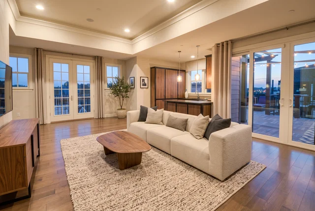
Floor 4 · Circulation + lighting
Relaxed evening hosting
Current source-reviewed revision addresses the recorded image findings; measured fit, final products and construction details remain open.
Source/plan and same-camera lighting QA recorded; proposed for homeowner feedback.
Open room views → · Night lighting →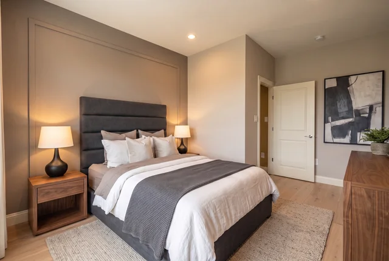
Floor 4 · New room construction + comfort
A cocoon at the top of the house
Current source-reviewed revision addresses the recorded image findings; measured fit, final products and construction details remain open.
Source/plan and same-camera lighting QA recorded; proposed for homeowner feedback.
Open room views → · Night lighting →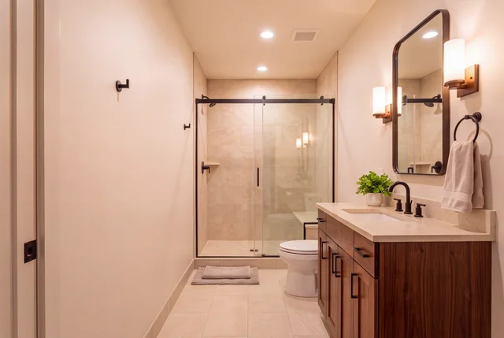
Floor 4 · Measure + durable surfaces
A compact, complete guest bath
Source-photo/plan audit findings have been addressed in the current review; measured fit and selections remain open.
Existing images retained after source/plan review; unseen scope qualified.
Open room views → · Night lighting →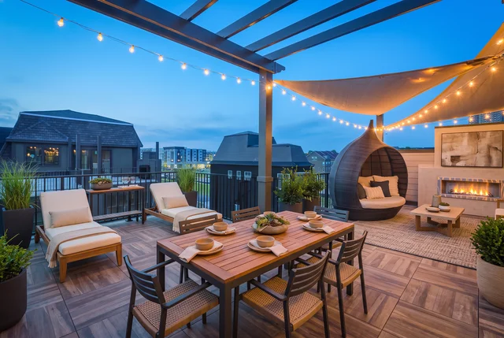
Floor 4 · Outdoor suitability
An outdoor room with breathing space
Source-photo/plan audit findings have been addressed in the current review; measured fit and selections remain open.
Existing images retained after source/plan review; unseen scope qualified.
Open room views → · Night lighting →No rooms match. Try another term or choose All floors.
05 / Scale is a design decision
Use these as starting points for a measured layout. They are not a substitute for local requirements, accessibility needs or product installation instructions.
| Element | Starting point | What changes it |
|---|---|---|
| Main circulation | Start around 36 in clear; aim for more on busy routes | Planning target, not an accessibility or code approval; include open doors and drawer positions. |
| Kitchen work aisles | 42 in for one cook / 48 in for multiple cooks | NKBA design recommendations; measure counter/appliance fronts. Accessible layouts and local requirements may need more. |
| Dining circulation | Aim for 42–48 in where people pass behind seats | Check the real pulled-out chair and cabinet projection. Table-to-wall arithmetic alone is not a usable aisle. |
| Sofa to coffee table | Start around 14–18 in | Adjust to seat depth, knee room, reach and mobility. Do not sacrifice the main route. |
| Artwork | Start near 57–60 in center on an open wall | Artwork over furniture relates to the furniture and architecture; mock it up rather than forcing eye-level rules. |
| Rug sizing | Keep the seating group connected; allow dining chairs to stay on the rug | Use actual furniture footprints. A larger rug cannot correct an oversized table. |
| Bedside use | Start with 30–36 in comfortable circulation where feasible | Coordinate with bed drawers, door swings and the user’s access needs; measure nightstands against the actual mattress. |
| Pendents + chandeliers | Use the table/island, fixture scale and sightline | The room-length-plus-width formula is only a sketch; actual fixture instructions and clearance requirements govern. |
Kitchen aisle reference: NKBA · Kitchen planning guidelines ↗
A live example / Formal dining
The brochure labels this room 155 × 183 inches. Explore a centered 40-inch-wide table and a cabinet projecting from one end wall. These are nominal gaps before trims and chair pullback.
Illustrative centered-table arithmetic, not an as-built layout. Cabinet location, chair widths and support positions must be measured. Ten-seat capacity is still unverified.
06 / From idea to a buildable room
The budget assumes most finishes are replaced, new furniture is purchased, and Bedroom 5 is built. You manage design and purchasing; a GC coordinates construction.
Measure the house, tape furniture layouts and approve a shared material board. Resolve Bedroom 5 construction, Bedroom 2 geometry, dining clearances and nighttime privacy.
Pay for the survey, drawings and real samples before committing to fabrication.
Assume most finishes need replacement. Coordinate Bedroom 5 partitions, flooring, wet-room systems, electrical changes and useful walnut built-ins. Retain service locations where feasible.
Quote prep, materials, installation, disposal and tax separately; compare retention and replacement where realistic.
Buy new furniture against an agreed schedule: beds and mattresses, seating, rugs, drapery and useful tables. Furnish the primary living and sleeping rooms first.
Prioritize touch points and daily comfort. Keep a contingency appropriate to the surveyed scope rather than a universal furnishing percentage.
Add art, plants and seasonal decoration once the core rooms work. Later purchases may be phased; they are deferred costs, not permanent savings.
Use movable accents for experiments. Avoid a whole-house replacement order before the first rooms work.
Track preparation here, then export it for your contractor. Checked items are personal planning notes, not design or construction approval.
Progress is saved only in this browser.
For each room: measured plan and elevations; new furniture schedule; finish and fixture schedule with exact samples/SKUs; lighting and control layout; coordinated AV, electrical and plumbing information; joinery shop drawings; quantities, quotes and open decisions.
Open materials & build book → · Open cost estimate & phases →Your supplied playbook is the starting point. This guide adapts it to the house and adds our design judgment; technical product claims are checked against the sources below.
The Home Design Playbook · Jonathan Chen
Owner-supplied source dated Oct 7, 2026. Adapted for this house; guidance above includes designer qualifications.
Portola · Roman Clay application and care ↗
Manufacturer guidance: substrate preparation, topcoat and wet-area limits.
Portola · Lime Wash system ↗
Manufacturer guidance: drywall undercoat, finish character and wipeable sealer.
US Department of Energy · Light-bulb selection ↗
CCT, color rendering and dimming compatibility; design targets here are our proposal.
NKBA · Kitchen planning guidelines ↗
Planning reference with older code citations; not a statement of current local code. Use current project requirements.
Reference check: 2026-10-08. Room photographs and the builder blueprint remain structural evidence; alternate generated views remain interpretations. Finishes, furniture allocation and construction details await physical and measured verification.